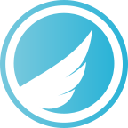
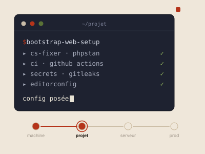
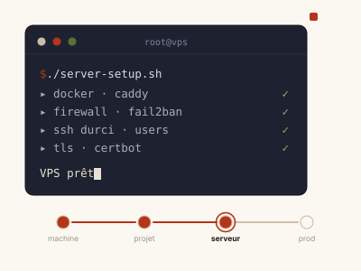
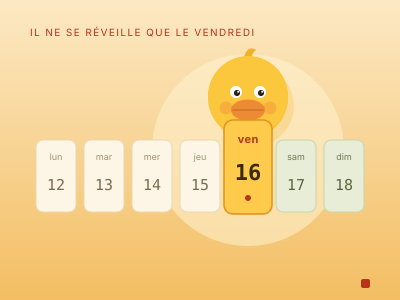

Développeur Backend, en prod.
Sept ans à faire tenir ce qui ne se voit pas.
Backend depuis sept ans. Quelques régressions, beaucoup de relectures, et jamais de déploiement le vendredi.
Concrètement : sept ans sur le même produit métier, une migration de PHP 7.0 à 8.4 et de Symfony 2.8 à 7.4 menée sans casser la prod, et une chaîne que je tiens de la machine de dev au serveur. Le legacy ne me fait pas peur, je l'ai habité.


Je crois aux API qui ne réveillent personne. Aux tests qu'on lit comme une histoire. Aux logs qu'on consulte avec plaisir.
Sept ans à faire vivre et grandir QuizzWeb, le SaaS de Quizzbox Solutions pour les centres de formation et d'examens (plusieurs dizaines de centres). J'ai participé à la migration du socle, de Symfony 2.8 à 7.4 et de PHP 7.0 à 8.4, de 2020 jusqu'à aujourd'hui, en gardant le legacy en production pendant la modernisation. Du recueil du besoin au support, en passant par l'optimisation SQL, le passage sous Docker et le déploiement.
Avant ça : DUT Informatique puis Licence Pro Développement Web à l'IUT Clermont Auvergne, dont une année d'alternance déjà passée chez Quizzbox.
Expérience
Loisirs
Lecture - thrillers et romans à suspense, j'adore
Musique - pas que de l'écoute
Sport - abonnement à la salle, maintenant faut y aller
Jeux vidéos - les meilleurs se jouent avec les amis
Techniques & maîtrise
PHP 7.0 → 8.4
Présent depuis le début, souvent moqué, jamais remplacé. Migration de 7.0 à 8.4 sur le codebase Quizzbox. Un langage qui a grandi, et moi avec.
Symfony 2.8 → 7.4
Framework de référence. Maintenance du legacy 2.8, migrations successives jusqu'à 7.4 : Doctrine, Messenger, Security, Events... pas un composant qu'on n'ait pas retourné.
Messenger
Le bus qui découple. Commandes asynchrones, retries, transport Redis ou Doctrine : les tâches lourdes sortent du cycle requête/réponse, l'utilisateur n'attend pas que le mail parte.
MySQL / MariaDB
La base. Littéralement. Schémas relationnels, migrations Doctrine, index pour les requêtes qui s'emballent et du SQL brut quand l'ORM fait ses caprices.
PostgreSQL
Types riches, JSONB indexable, contraintes qui tiennent le modèle au carré. Mon défaut côté données sur les projets récents.
Redis
Cache, sessions, files Messenger et compteurs temps réel. Ce qu'on dégaine quand déranger Postgres pour ça n'aurait aucun sens.
Docker
Stacks multi-services reproductibles : php-fpm, MariaDB, Redis, Mailpit... Fini le classique ça tourne chez moi.
Git
Versionning quotidien depuis le premier commit. GitHub Actions pour CI/CD, déploiement auto à chaque merge. L'historique dit tout (sauf les idées du vendredi soir).
PHPUnit
Les tests qu'on lit comme une histoire, pour de vrai. Unitaires et fonctionnels, fixtures sous contrôle, et la CI au vert avant que le diff parte. Un filet, pas une case à cocher.
HTML / CSS
Les fondamentaux qu'on sous-estime, jusqu'au premier bug CSS en prod. Sémantique, responsive, animations... pour ne plus jamais inventer des noms de classes.
JavaScript
Vanilla d'abord, Hotwire (Turbo, Stimulus) quand ça le mérite. Le front juste ce qu'il faut, pas un SPA pour afficher un formulaire.
FrankenPHP
Serveur PHP nouvelle génération : HTTP/2 natif, worker mode, intégration Caddy. Déployé en prod sur Red Flag Bingo. C'est PHP, mais il a survécu à l'expérience.
Nginx / Caddy
Serveur web et reverse proxy. Nginx pour le contrôle fin, bloc location {} compris sans relire la doc ; Caddy pour le TLS automatique et un Caddyfile qui tient en dix lignes. C'est lui qui sert mon push-to-deploy.

Mercure
Le temps réel sans gérer un WebSocket à la main : le serveur pousse, le navigateur écoute en SSE. En prod sur Red Flag Bingo et Le Canard du Vendredi. Du push natif, pas du polling déguisé.
IA assistée copilote
Claude Code et Codex au quotidien : review de diff, génération de tests, refacto guidée, exploration de codebase legacy. L'IA pour accélérer le répétitif - pas pour réfléchir à ma place. Je relis tout, elle ne pousse rien en prod sans moi.
En apprentissage
React, Node.js, l'exploration de l'autre côté du miroir. Backend forever, mais ce serait dommage de rester là.
Quelques projets...
Rangés par intention plutôt que par date : du livrable client à l'expérience du dimanche soir.

Docendo
SaaS d'accompagnement scolaire du CP à la 3e, co-fondé et construit de zéro. Milo, le tuteur IA, guide l'élève sans jamais souffler les réponses : récitation orale notée via Whisper auto-hébergé, et un moteur d'adaptation qui cible les sessions sur les lacunes réelles. Données d'élèves mineurs obligent, conforme RGPD de bout en bout. Milo, lui, ne copie jamais depuis Stack Overflow.
voir le site ↗
La où l'on va
Site vitrine sous WordPress pour un accompagnateur de randonnées : ses parcours, ses services, et de quoi le faire évoluer lui-même. Léger, nature, avec quelques plantes d'Auvergne qui cachent une histoire. Mes seules dépendances ici ? Une bonne paire de chaussures de marche.
voir le site ↗
Humelis
Suivi d'humeur relié à un soignant : on note son état dès qu'il bouge, et un bilan quotidien en trace l'évolution sur un graphe. Le praticien y a une vue directe pour ajuster un traitement ou repérer un pic d'anxiété... Et l'accès se partage d'un simple QR code. Données de santé obligent : le tout est conforme RGPD. Le seul dashboard où voir la courbe monter fait plaisir.
voir le site ↗
Environnement de dev
Premier maillon : ma station de dev macOS montée en une commande, Homebrew, Zsh, VS Code, PHP/Symfony et le reste. La machine prête avant que le café refroidisse.
voir le repo ↗
Socle qualité
La machine prête, place au projet : ce CLI y dépose d'un coup ma couche qualité, CI et sécurité, CS-Fixer, PHPStan, GitHub Actions, secrets. Que des fichiers de config, jamais un binaire. Il pose les règles du jeu, pas les joueurs.
voir le repo ↗
Socle serveur
Le projet est carré, reste à l'héberger : server-setup change un VPS nu en serveur de prod, Docker, reverse-proxy Caddy, firewall, SSH durci et TLS, en un script. De la boîte vide au serveur blindé, sans la nuit blanche de sysadmin qui va d'habitude avec.
voir le repo ↗
Push-to-deploy
Le dernier maillon, qui referme la boucle : un push sur main déclenche un webhook, le VPS récupère le code et joue le déploiement. À jour en quelques secondes, plus jamais à la main. Et toujours pas le vendredi, on a des principes.
voir le repo ↗
Red Flag Bingo
Bingo collaboratif en temps réel, à prendre au second degré : on choisit son thème, on joue seul ou à plusieurs, et on coche les cases jusqu'à décrocher la ligne. Synchro live entre joueurs via Mercure. Ici, au moins, accumuler les red flags fait gagner.
voir le site ↗
Hush
L'appli faite pour ne jamais être utilisée : on lance le chrono, on change d'onglet… et surtout on ne revient pas. Le score monte tant qu'on reste loin ; revenir met fin à la partie. Le meilleur, c'est donc celui qui l'oublie le plus longtemps, un peu comme ce ticket tout en bas du backlog.
voir le site ↗
DevSpeak
Le petit traducteur pour parler comme un dev (ou presque) : tu écris ta phrase, tu choisis un profil et DevSpeak te la ressort avec le ton, l'intonation et le jargon qui vont avec. Du moldu au barbu, en un clic.
voir le site ↗
Le Canard du Vendredi
L'appli qui ne bosse qu'un jour par semaine, et l'assume pleinement. Du lundi au jeudi, le canard dort et la porte reste close ; le vendredi venu, il se réveille, s'étire et se laisse enfin approcher. Une seule règle : revenez un vendredi, ou patientez.
voir le site ↗On en parle ? →
contact@labault.dev +33 6 76 13 67 97 Télécharger mon CV (PDF)CDI en priorité. Une mission longue, j'y réfléchis.